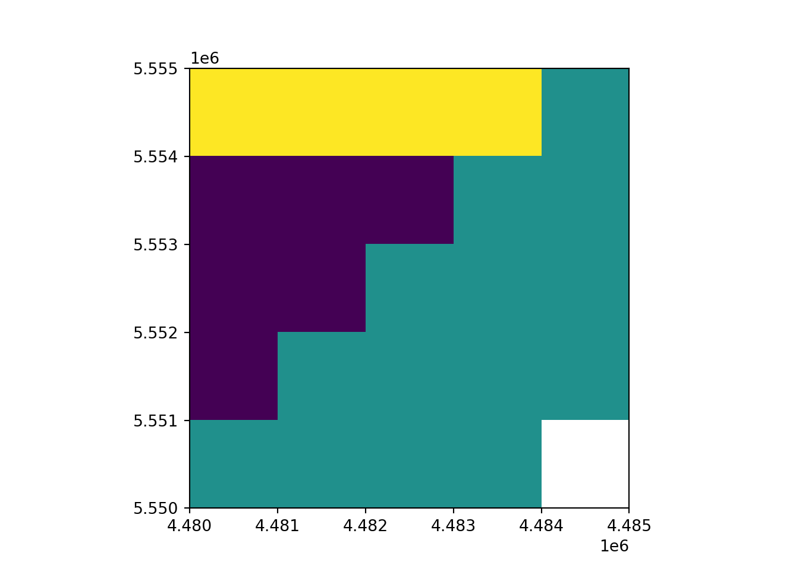
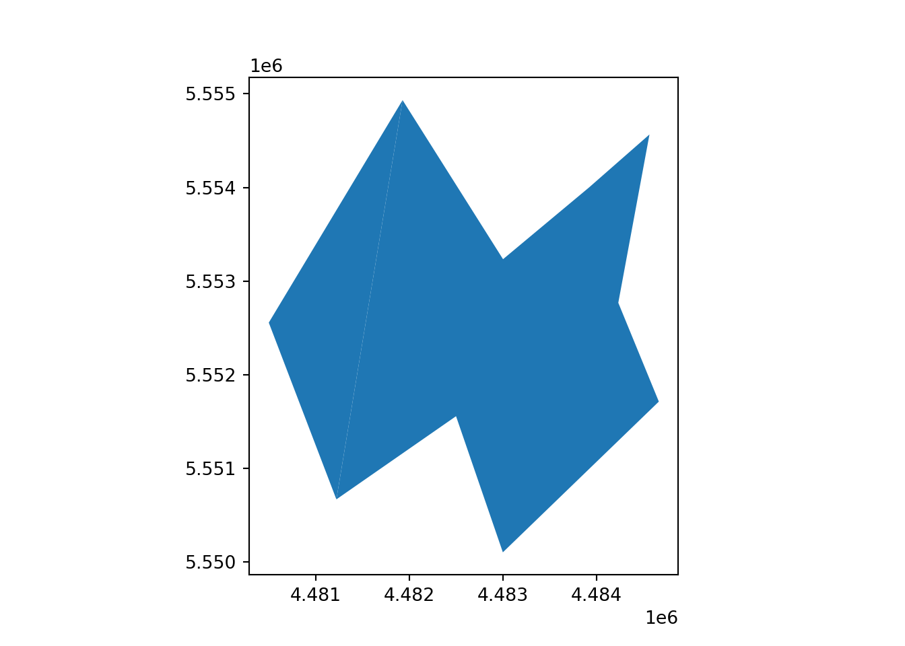
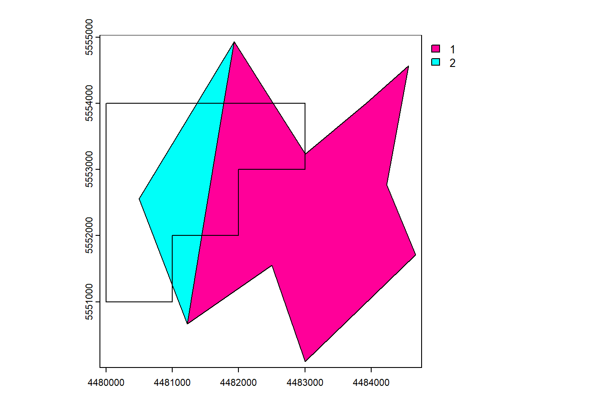

# load the library
library(terra)
library(tidyverse)Basic Manipulation
1 Library terra
The terra package in R is a powerful and versatile package for working with geospatial data, including vector and raster data. It provides a wide range of functionality for reading, processing, analyzing, and visualizing spatial data.
For more in-depth information and resources on the terra package and spatial data science in R, you can explore the original website Spatial Data Science.
Firstly load the library to the R space:
2 Creating spatial data manually
Creating spatial data manually is not a common practice due to the typically large volumes of data required. However, by starting from scratch and creating spatial data manually, you can gain a deeper understanding of the data’s structure and properties. This manual creation process helps you become more familiar with how spatial data is organized and can be a valuable learning exercise.
The examples provided here are just a few methods for manually creating spatial data. There are numerous ways to create spatial data in R with the terra package. You can refer to the package documentation, specifically the rast() and vect() functions, to explore more advanced methods for creating and manipulating spatial data.
2.1 Vector
As introduced in the section, spatial vector data typically consists of three main components:
- Geometry: Describes the spatial location and shape of features.
- Attributes: Non-spatial properties associated with features.
- CRS (Coordinate Reference System): Defines the spatial reference framework.
# Define the coordinate reference system (CRS) with EPSG codes
crs_31468 <- "EPSG:31468"
# Define coordinates for the first polygon
x_polygon_1 <- c(4484566, 4483922, 4483002, 4481929, 4481222, 4482500, 4483000, 4484666, 4484233)
y_polygon_1 <- c(5554566, 5554001, 5553233, 5554933, 5550666, 5551555, 5550100, 5551711, 5552767)
xy_polygon_1 <- cbind(id=1, part=1, x_polygon_1, y_polygon_1)
# Define coordinates for the second polygon
x_polygon_2 <- c(4481929, 4481222, 4480500)
y_polygon_2 <- c(5554933, 5550666, 5552555)
xy_polygon_2 <- cbind(id=2, part=1, x_polygon_2, y_polygon_2)
# Combine the two polygons into one data frame
xy_polygon <- rbind(xy_polygon_1, xy_polygon_2)
# Create a vector layer for the polygons, specifying their type, attributes, CRS, and additional attributes
vect_Test <- vect(xy_polygon, type="polygons", atts = data.frame(ID_region = 1:2, Name = c("a", "b")), crs = crs_31468)
vect_Test$region_area <- expanse(vect_Test)2.2 Raster
For raster data, the geometry is relatively simple and can be defined by the following components:
- Coordinate of Original Point (X0, Y0) plus Resolutions (X and Y)
- Boundaries (Xmin, Xmax, Ymin, Ymax) plus Number of Rows and Columns
One of the most critical aspects of raster data is the values stored within its cells. You can set or modify these values using the values()<- function in R.
rast_Test <- rast(ncol=10, nrow=10, xmin=-150, xmax=-80, ymin=20, ymax=60)
values(rast_Test) <- runif(ncell(rast_Test))Certainly, you can directly create a data file like an ASC (ASCII) file for raster data.
3 Read and write
Reading and writing data are fundamental processes that precede spatial data manipulation. Spatial data is typically acquired from external sources.
However, due to the substantial differences between raster and vector data structures, they are often handled separately.
| Data Type | Read | Write |
|---|---|---|
| Vector | vect() |
writeVect() |
| Raster | rast() |
writeRast() |
The test files are available in Github
# Read shp-file as a vector layer
vect_Test <- vect("https://raw.githubusercontent.com/HydroSimul/Web/main/data_share/minibeispiel_polygon.geojson")
# Read raster file
rast_Test <- rast("https://raw.githubusercontent.com/HydroSimul/Web/main/data_share/minibeispiel_raster.asc")
# Info and Plot of vector layer
vect_Test class : SpatVector
geometry : polygons
dimensions : 2, 3 (geometries, attributes)
extent : 4480500, 4484666, 5550100, 5554933 (xmin, xmax, ymin, ymax)
source : minibeispiel_polygon.geojson
coord. ref. : DHDN / 3-degree Gauss-Kruger zone 4 (EPSG:31468)
names : ID_region Name region_area
type : <int> <chr> <num>
values : 1 a 8.853e+06
2 b 2.208e+06plot(vect_Test)
# Info and Plot of raster layer
rast_Testclass : SpatRaster
dimensions : 5, 5, 1 (nrow, ncol, nlyr)
resolution : 1000, 1000 (x, y)
extent : 4480000, 4485000, 5550000, 5555000 (xmin, xmax, ymin, ymax)
coord. ref. :
source : minibeispiel_raster.asc
name : minibeispiel_raster plot(rast_Test)
writeVector(vect_Test, "fn_Output_Vector.geojson", "GeoJSON")
writeRaster(rast_Test, "fn_OutPut_Raster.tif")4 Coordinate Reference Systems
4.1 Assigning a CRS
In cases where the Coordinate Reference System (CRS) information is not included in the data file’s content, you can assign it manually using the crs() function. This situation often occurs when working with raster data in formats like ASC (Arc/Info ASCII Grid) or other file formats that may not store CRS information.
crs(rast_Test) <- "EPSG:31468"
rast_Testclass : SpatRaster
dimensions : 5, 5, 1 (nrow, ncol, nlyr)
resolution : 1000, 1000 (x, y)
extent : 4480000, 4485000, 5550000, 5555000 (xmin, xmax, ymin, ymax)
coord. ref. : DHDN / 3-degree Gauss-Kruger zone 4 (EPSG:31468)
source : minibeispiel_raster.asc
name : minibeispiel_raster As the results showed, the CRS information has been filled with the necessary details in line coord. ref..
The use of EPSG (European Petroleum Survey Group) codes is highly recommended for defining Coordinate Reference Systems (CRS) in spatial data. You can obtain information about EPSG codes from the EPSG website.
NOTE
You should not use this approach to change the CRS of a data set from what it is to what you want it to be. Assigning a CRS is like labeling something.
4.2 Transforming vector data
The transformation of vector data is relatively simple, as it involves applying a mathematical formula to the coordinates of each point to obtain their new coordinates. This transformation can be considered as without loss of precision.
The project() function can be utilized to reproject both vector and raster data.
# New CRS
crs_New <- "EPSG:4326"
# Reproject
vect_Test_New <- project(vect_Test, crs_New)
# Info and Plot of vector layer
vect_Test_New class : SpatVector
geometry : polygons
dimensions : 2, 3 (geometries, attributes)
extent : 11.72592, 11.78419, 50.08692, 50.13034 (xmin, xmax, ymin, ymax)
coord. ref. : lon/lat WGS 84 (EPSG:4326)
names : ID_region Name region_area
type : <int> <chr> <num>
values : 1 a 8.853e+06
2 b 2.208e+064.3 Transforming raster data
Vector data can be transformed from lon/lat coordinates to planar and back without loss of precision. This is not the case with raster data. A raster consists of rectangular cells of the same size (in terms of the units of the CRS; their actual size may vary). It is not possible to transform cell by cell. For each new cell, values need to be estimated based on the values in the overlapping old cells. If the values are categorical data, the “nearest neighbor” method is commonly used. Otherwise some sort of interpolation is employed (e.g. “bilinear”). (From Spatial Data Science)
Note
Because projection of rasters affects the cell values, in most cases you will want to avoid projecting raster data and rather project vector data.
4.3.1 With CRS
The simplest approach is to provide a new CRS:
# New CRS
crs_New <- "EPSG:4326"
# Reproject
rast_Test_New <- project(rast_Test, crs_New)
# Info and Plot of vector layer
rast_Test_Newclass : SpatRaster
dimensions : 4, 6, 1 (nrow, ncol, nlyr)
resolution : 0.01176853, 0.01176853 (x, y)
extent : 11.7188, 11.78941, 50.08395, 50.13102 (xmin, xmax, ymin, ymax)
coord. ref. : lon/lat WGS 84 (EPSG:4326)
source(s) : memory
name : minibeispiel_raster
min value : 1.000000
max value : 2.586555 plot(rast_Test)
plot(rast_Test_New)

4.3.2 With Mask Raster
A second way is provide an existing SpatRaster with the geometry you desire, with special boundary and resolution, this is a better way.
# New CRS
rast_Mask <- rast(ncol=10, nrow=10, xmin=265000, xmax=270000, ymin=5553000, ymax=5558000)
crs(rast_Mask) <- "EPSG:25833"
values(rast_Mask) <- 1
# Reproject
rast_Test_New <- project(rast_Test, rast_Mask)
# Info and Plot of vector layer
rast_Test_Newclass : SpatRaster
dimensions : 10, 10, 1 (nrow, ncol, nlyr)
resolution : 500, 500 (x, y)
extent : 265000, 270000, 5553000, 5558000 (xmin, xmax, ymin, ymax)
coord. ref. : ETRS89 / UTM zone 33N (EPSG:25833)
source(s) : memory
name : minibeispiel_raster
min value : 1
max value : 3 plot(rast_Test)
plot(rast_Test_New)
5 Vector data manipulation
In vector manipulation, it’s crucial to handle both attributes and shapes, especially when combining multiple shapes or layers with other shapes and addressing overlapping layers.
5.1 Attributes manipulation
5.1.1 Extract all Attributes
as.data.frame()
df_Attr <- as.data.frame(vect_Test)
df_Attr ID_region Name region_area
1 1 a 8853404
2 2 b 22081095.1.2 Extract one with attribute name
$name[, "name"]
vect_Test$ID_region[1] 1 2vect_Test[,"ID_region"] class : SpatVector
geometry : polygons
dimensions : 2, 1 (geometries, attributes)
extent : 4480500, 4484666, 5550100, 5554933 (xmin, xmax, ymin, ymax)
source : minibeispiel_polygon.geojson
coord. ref. : DHDN / 3-degree Gauss-Kruger zone 4 (EPSG:31468)
names : ID_region
type : <int>
values : 1
25.1.3 Add a new attribute
$name <-[, "name"] <-
vect_Test$New_Attr <- c("n1", "n2")
vect_Test[,"New_Attr"] <- c("n1", "n2")5.1.4 Merge several attributes
- same order
cbind()
- common (key-)attributes
merge()
df_New_Attr <- data.frame(Name = c("a", "b"), new_Attr2 = c(9, 6))
cbind(vect_Test, df_New_Attr) class : SpatVector
geometry : polygons
dimensions : 2, 6 (geometries, attributes)
extent : 4480500, 4484666, 5550100, 5554933 (xmin, xmax, ymin, ymax)
source : minibeispiel_polygon.geojson
coord. ref. : DHDN / 3-degree Gauss-Kruger zone 4 (EPSG:31468)
names : ID_region Name region_area New_Attr Name new_Attr2
type : <int> <chr> <num> <chr> <chr> <num>
values : 1 a 8.853e+06 n1 a 9
2 b 2.208e+06 n2 b 6merge(vect_Test, df_New_Attr, by = "Name") class : SpatVector
geometry : polygons
dimensions : 2, 5 (geometries, attributes)
extent : 4480500, 4484666, 5550100, 5554933 (xmin, xmax, ymin, ymax)
coord. ref. : DHDN / 3-degree Gauss-Kruger zone 4 (EPSG:31468)
names : Name ID_region region_area New_Attr new_Attr2
type : <chr> <int> <num> <chr> <num>
values : a 1 8.853e+06 n1 9
b 2 2.208e+06 n2 65.1.5 Delete a attribute
$name <- NULL
vect_Test$New_Attr <- c("n1", "n2")
vect_Test[,"New_Attr"] <- c("n1", "n2")5.2 Object Append and aggregate
5.2.1 Append new Objects
rbind()
# New Vect
# Define the coordinate reference system (CRS) with EPSG codes
crs_31468 <- "EPSG:31468"
# Define coordinates for the first polygon
x_polygon_3 <- c(4480400, 4481222, 4480500)
y_polygon_3 <- c(5551000, 5550666, 5552555)
xy_polygon_3 <- cbind(id=3, part=1, x_polygon_3, y_polygon_3)
# Create a vector layer for the polygons, specifying their type, attributes, CRS, and additional attributes
vect_New <- vect(xy_polygon_3, type="polygons", atts = data.frame(ID_region = 3, Name = c("b")), crs = crs_31468)
vect_New$region_area <- expanse(vect_New)
# Append the objects
vect_Append <- rbind(vect_Test, vect_New)
vect_Append class : SpatVector
geometry : polygons
dimensions : 3, 4 (geometries, attributes)
extent : 4480400, 4484666, 5550100, 5554933 (xmin, xmax, ymin, ymax)
source : minibeispiel_polygon.geojson
coord. ref. : DHDN / 3-degree Gauss-Kruger zone 4 (EPSG:31468)
names : ID_region Name region_area New_Attr
type : <int> <chr> <num> <chr>
values : 1 a 8.853e+06 n1
2 b 2.208e+06 n2
3 b 6.558e+05 NA5.2.2 Aggregate / Dissolve
It is common to aggregate (“dissolve”) polygons that have the same value for an attribute of interest.
aggregate()
vect_Aggregated <- terra::aggregate(vect_Append, by = "Name")
vect_Aggregated class : SpatVector
geometry : polygons
dimensions : 2, 5 (geometries, attributes)
extent : 4480400, 4484666, 5550100, 5554933 (xmin, xmax, ymin, ymax)
coord. ref. : DHDN / 3-degree Gauss-Kruger zone 4 (EPSG:31468)
names : Name mean_ID_region mean_region_area New_Attr agg_n
type : <chr> <num> <num> <chr> <int>
values : a 1 8.853e+06 n1 1
b 2.5 1.432e+06 NA 2plot(vect_Append, "ID_region")
plot(vect_Aggregated, "Name")5.3 Overlap
To perform operations that involve overlap between two vector datasets, we will create a new vector dataset:
vect_Overlap <- as.polygons(rast_Test)[1,]
names(vect_Overlap) <- "ID_Rast"
plot(vect_Overlap, "ID_Rast")
5.3.1 Erase
erase()
vect_Erase <- erase(vect_Test, vect_Overlap)
plot(vect_Erase, "ID_region")
5.3.2 Intersect
intersect()
vect_Intersect <- terra::intersect(vect_Test, vect_Overlap)
plot(vect_Intersect, "ID_region")5.3.3 Union
Appends the geometries and attributes of the input.
union()
vect_Union <- terra::union(vect_Test, vect_Overlap)
plot(vect_Union, "ID_region")5.3.4 Cover
cover() is a combination of intersect() and union(). intersect returns new (intersected) geometries with the attributes of both input datasets. union appends the geometries and attributes of the input. cover returns the intersection and appends the other geometries and attributes of both datasets.
cover()
vect_Cover <- terra::cover(vect_Test, vect_Overlap)
plot(vect_Cover, "ID_region")
5.3.5 Difference
symdif()
vect_Difference <- terra::symdif(vect_Test, vect_Overlap)
plot(vect_Difference, "ID_region")
6 Raster data manipulation
Compared to vector data, raster data stores continuous numeric values more, leading to significant differences in manipulation and analysis approaches.
6.1 Raster algebra
Many generic functions that allow for simple and elegant raster algebra have been implemented for Raster objects, including the normal algebraic operators such as +, -, *, /, logical operators such as >, >=, <, ==, !, and functions like abs, round, ceiling, floor, trunc, sqrt, log, log10, exp, cos, sin, atan, tan, max, min, range, prod, sum, any, all. In these functions, you can mix raster objects with numbers, as long as the first argument is a raster object. (Spatial Data Science)
rast_Add <- rast_Test + 10
plot(rast_Add)
6.2 Replace with Condition
rast[condition] <-
# Copy to a new raster
rast_Replace <- rast_Test
# Replace
rast_Replace[rast_Replace > 1] <- 10
plot(rast_Replace)
6.3 Summary of multi-layers
rast_Mean <- mean(rast_Test, rast_Replace)
plot(rast_Mean)
6.4 Aggregate and disaggregate
aggregate()disagg()
rast_Aggregate <- aggregate(rast_Test, 2)
plot(rast_Aggregate)
rast_Disagg <- disagg(rast_Test, 2)
rast_Disaggclass : SpatRaster
dimensions : 10, 10, 1 (nrow, ncol, nlyr)
resolution : 500, 500 (x, y)
extent : 4480000, 4485000, 5550000, 5555000 (xmin, xmax, ymin, ymax)
coord. ref. : DHDN / 3-degree Gauss-Kruger zone 4 (EPSG:31468)
source(s) : memory
name : minibeispiel_raster
min value : 1
max value : 3 plot(rast_Disagg)
6.5 Crop
The crop function lets you take a geographic subset of a larger raster object with an extent. But you can also use other spatial object, in them an extent can be extracted.
crop()- with extention
- with rster
- with vector
rast_Crop <- crop(rast_Test, vect_Test[1,])
plot(rast_Crop)
6.6 Trim
trim()
Trim (shrink) a SpatRaster by removing outer rows and columns that are NA or another value.
rast_Trim0 <- rast_Test
rast_Trim0[21:25] <- NA
rast_Trim <- trim(rast_Trim0)plot(rast_Trim0)
plot(rast_Trim)6.7 Mask
mask()crop(mask = TRUE)=mask()+trim()
When you use mask manipulation in spatial data analysis, it involves setting the cells that are not covered by a mask to NA (Not Available) values. If you apply the crop(mask = TRUE) operation, it means that not only will the cells outside of the mask be set to NA, but the resulting raster will also be cropped to match the extent of the mask.
rast_Mask <- mask(rast_Disagg, vect_Test[1,])
rast_CropMask <- crop(rast_Disagg, vect_Test[1,], mask = TRUE)plot(rast_Mask)
plot(rast_CropMask)